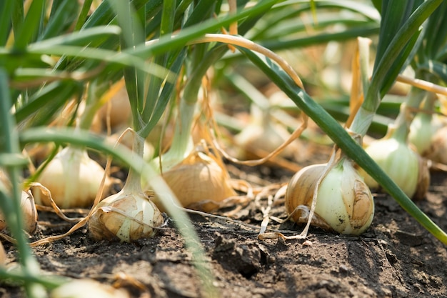
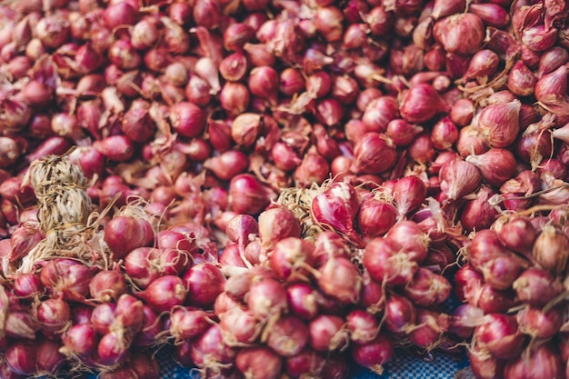
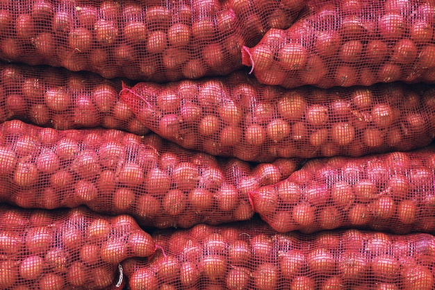

ECOLAND
ECOLAND
ECOLAND
ECOLAND
| Varieties | Red Onion, Yellow Onion, White Onion |
|---|---|
| Sizes | 40–60 mm, 60–80 mm, 80 mm+ |
| Packaging | 5–25kg mesh bags or cartons |
| Shelf Life | 90–180 days (proper storage) |
| Certifications | Global GAP, ISO 22000 |
Long availability window supplying global markets with consistent volumes.
| Product | Jan | Feb | Mar | Apr | May | Jun | Jul | Aug | Sep | Oct | Nov | Dec |
|---|---|---|---|---|---|---|---|---|---|---|---|---|
| Onions | ❌ | ❌ | 🔵 | ✅ | ✅ | ✅ | ✅ | ✅ | ✅ | 🟡 | 🟡 | ❌ |
Peak Season (Jan–Jun)
Limited Supply (Jul)
Off Season (Aug–Dec)
Season Start (Jan)
Maintaining premium quality from harvest to global delivery.
Grown in carefully selected agricultural regions using best farming practices to ensure optimal growth, uniform quality, and food safety compliance.
Harvested at peak maturity using manual and controlled methods to preserve freshness, flavor, and physical integrity.
Strict grading, pre-cooling, and quality inspections are applied to meet international retail and wholesale specifications.
Packed in export-grade packaging and shipped in temperature-controlled containers to ensure maximum shelf life upon arrival.



Our export programs start from 20 tons.
Through proper curing, strict grading, and controlled storage conditions.
Because of their strong skin, excellent pungency, and long shelf life.